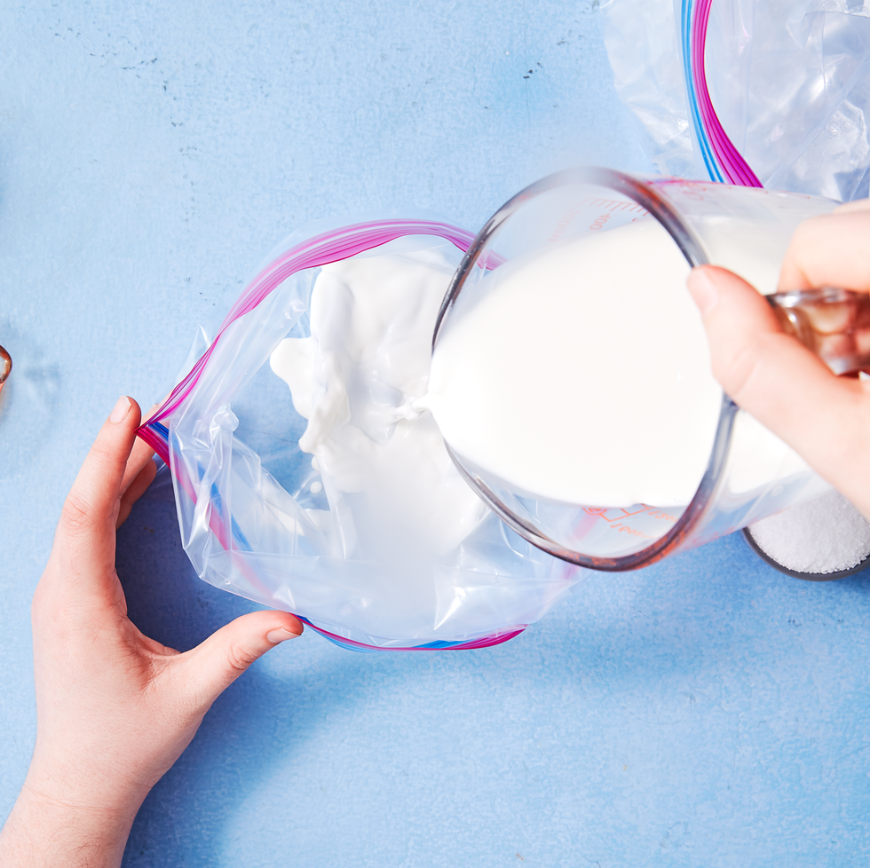
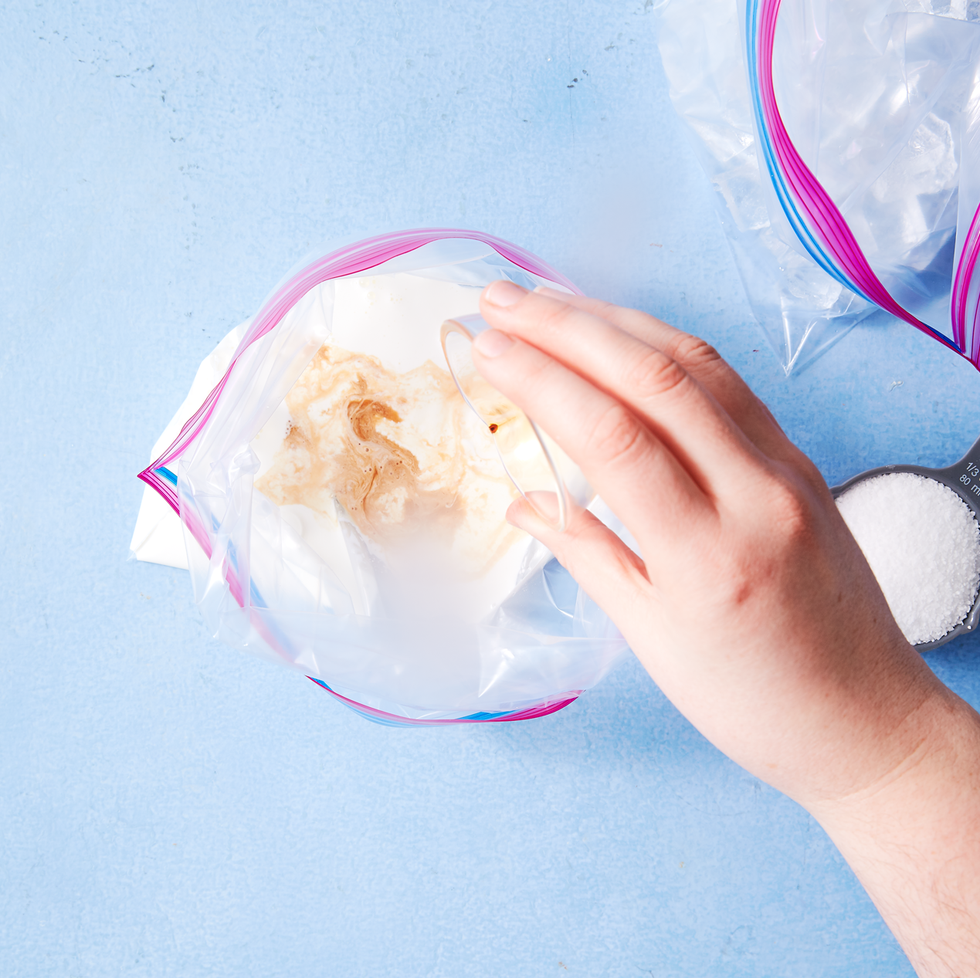
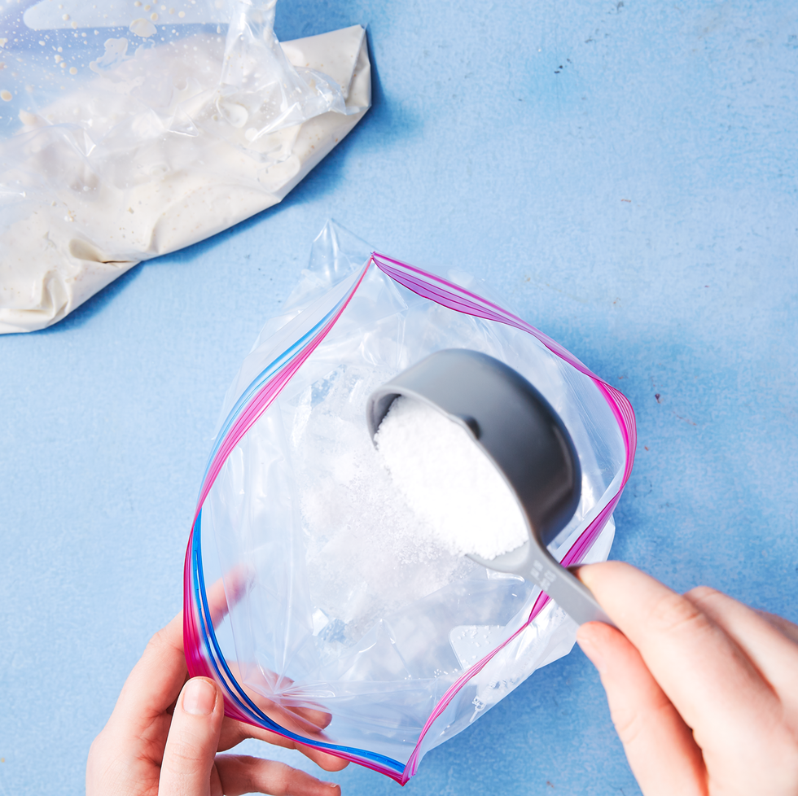
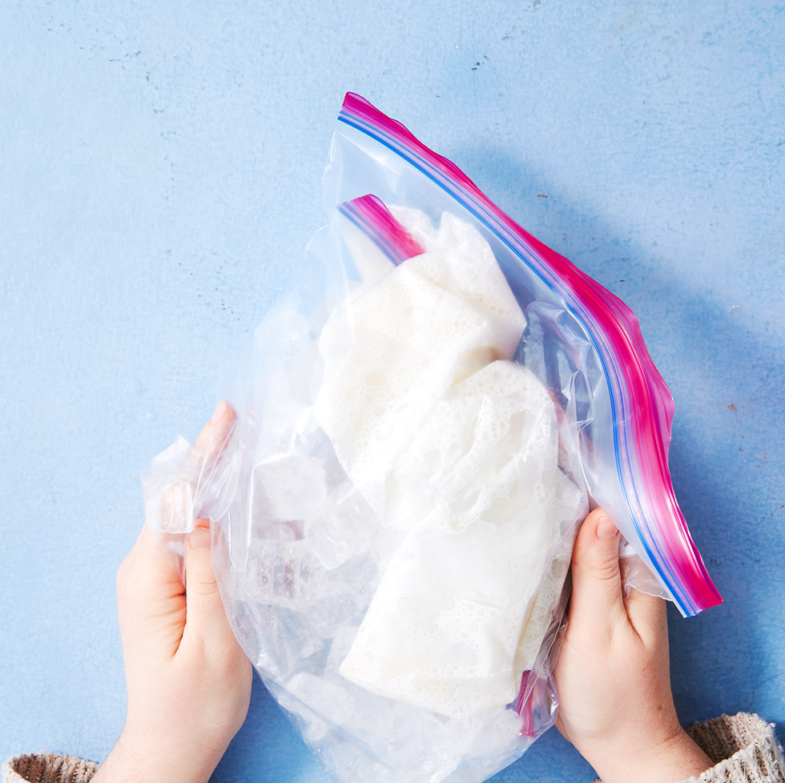
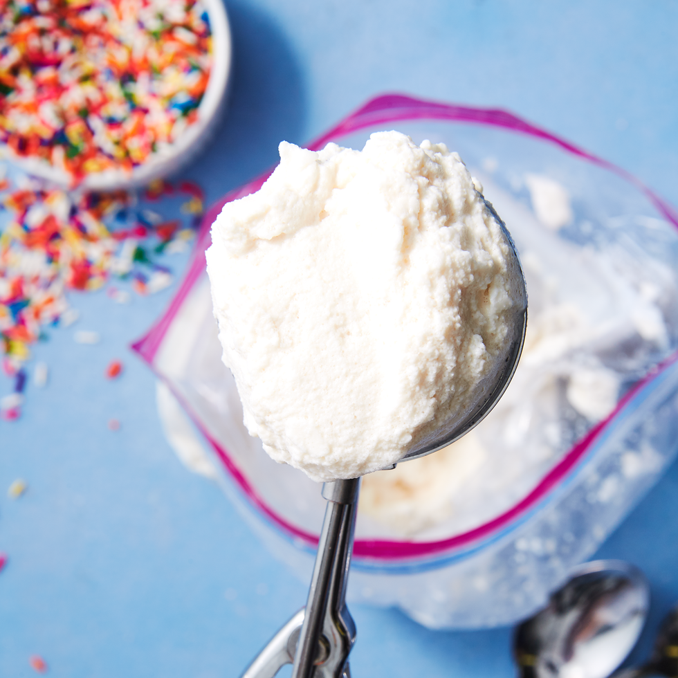

No fancy ice cream maker? No problem! You can make delicious homemade ice cream without any special gadget or crazy ingredients. All you need is a plastic baggie and 15 minutes (no seriously, that's it!). It's fully customizable based on your fave flavors and toppings, so you can truly create your perfect bowl of ice cream right at home. Scoop directly out of the bag (or place it in an airtight container in the freezer before serving if you like yours a little firmer), and enjoy your favorite customizable homemade ice cream recipe in less time than it takes to run out and grab a pint.
We're making plain vanilla ice cream in this recipe, but your options don't stop there. If you want to flavor your ice cream, you can change up the extract with whatever you prefer (peppermint! strawberry!), or add in a little chocolate syrup before you start shaking for a bowl of chocolate ice cream goodness.
We all know that one of the best parts of a bowl of ice cream is the toppings. We love folding in chopped Oreos or Reeses after shaking, but feel free to top with fruit (strawberries, blueberries...), gummy candy, fun sprinkles, or your favorite chopped up candy bar. This ice cream is all about you—make your perfect bowl!



